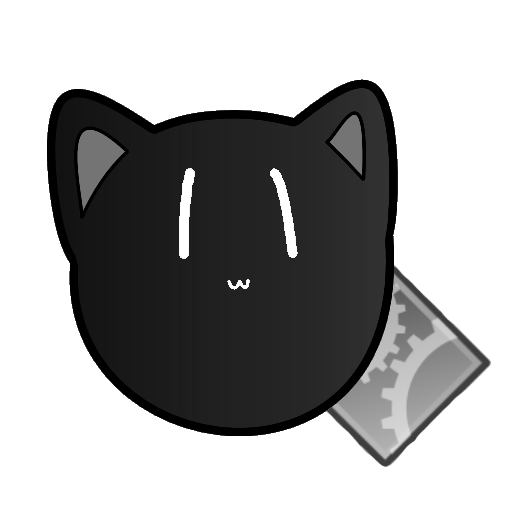

Introduction
Anmincat Linux (Admin-cat Linux) is a stripped-down portable custom linux distribution to be a smallest bootable rescue system contains useful softwares and tools, Graphical User Interface with 2D Graphic Drivers.
Just for rescue and maintenance the system.
The entire system is created from software packages, just like puppy linux but a bit different, stupid and painful. All Software packages came from Debian, Devuan and MX Linux, one-by-one and mix-and-match together. Created by Supphakit Duanghoy, by single developer.
History
Anmincat Linux development began in 2021. The first version of Anmincat Linux was formally named as "LunarMDBoot" or "LunarMagicDriveBoot". LunarMDBoot was created from LFS (Linux From Scratch) and debootstrap after I learned how Linux works from the LFS Book, I was compiling and making my own Linux system at that time too. It's hard and time consuming, but fun indeed.
The goal of LunarMDBoot is the same as Anmincat Linux, is to be bootable system with toolbox but without the "smallest" size possible. At that time, another version of LunarMDBoot was created from debootstrap without any strip-down, the size was 280MB+ ISO size with GUI, but only VESA Graphics Driver (That means it only works with BIOS System). And LunarMDBoot was in private development and no public releases.
After that, I began from zero again. Tweaking and stripping down RootFS (Root File System) and Linux Kernel, remove unnecessary components from the software packages and now the entire system was created from buildscripts and apt download after a lot of trial and errors.
All of this, without any inspiration and good mental heath, I haven't finished developing this system until today.
Mascot!

The mascot of Anmincat Linux called "Dusty", That means it contain dust!
Dusty is a black cat, but in real life she's a calico cat!
I found her in my roof room of my house, she's came from temple nearby my house and living here for a long time now. She's a lovely cat!
Thanks to
Distributions
- Linux From Scratch for make me understanding how Linux works.
- Damn Small Linux for the tiniest size inspiration.
- Tiny Core Linux for keyboard layouts and inspiration.
- Puppy Linux for WoofCE for make me understanding how Puppy Linux was created.
- Debian for package manager, archive base and software packages, package search engine.
- Devuan for base and software packages and being my main system until today.
- MX Linux for GTKdialog package.
Persons
- My mom for motivating me to continue doing this project.
- My cat for ideas, naming, logo and mascot.
- Everyone from Linux community and Extreme IT Facebook group for trying out my Linux distribution!
Legal and licenses
This linux distribution project is open-source, you can find buildscripts and other things from here https://github.com/anmincat
Copyright (c) 2022 Supphakit Duanghoy. All rights reserved.
Buildscripts and custom codes is covered by GNU General Public License, version 2.
Website, documentation and wikis is covered by CC BY-SA 3.0.
Any software that comes with Anmincat, may comes with various or the same license.